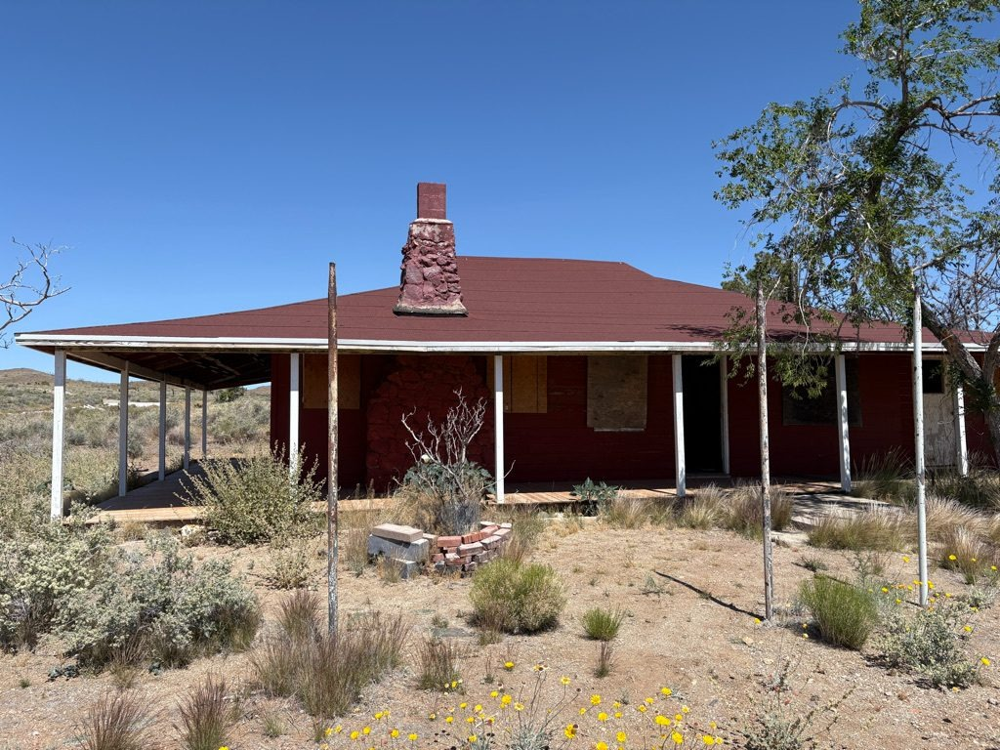
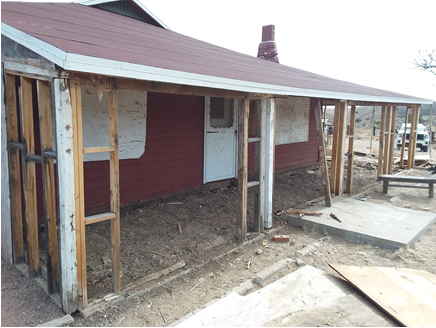
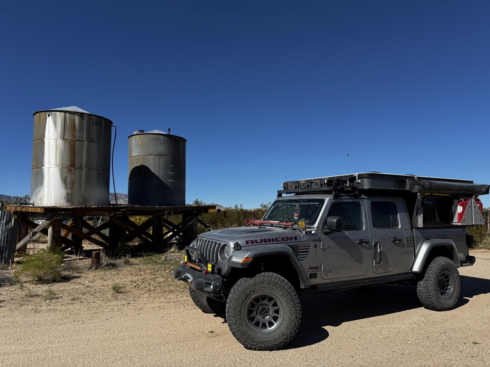

We are heading back into the desert for the Fall 2026 OverlandBound Trail Guardian event in the Mojave National Preserve! Work projects, campsite surveys, and historical conservation efforts will take place across the weekend.

✅ NPS Confirmation Received — Event is a GO!
National Park Service approval has been confirmed for our Fall 2026 Trail Guardian conservation weekend. Project assignments are officially locked in—see project details below and RSVP to secure your spot.
📍 Information
- Trip Status: Confirmed — GO (NPS Approved)
- Trail Guardian Project Lead: Mike Keith (Motomikeca)
- East Bay Convoy Lead: Kent R.
- Main Work Day: Saturday, October 24, 2026
- Base Camp: OX Ranch, Mojave National Preserve (Thu–Sun, Oct 22–25)
- Rally Point: LIVE — Overland Bound Rally Point #3319
- Convoy Staging: TBD — standard East Bay convoy assembly details will be announced closer to the event date
🛠️ Projects & Volunteer Opportunities
National Park Service confirmation has been officially received—the event is a GO!
This Trail Guardian will be a little different: we have one main project that we need 15 people for, plus other projects and exploration opportunities within the preserve.
Main Project — Rock Springs Land & Cattle Co. Headquarters (Barnwell)
Lead: Mike Keith (Motomikeca) • Crew requirement: 15 volunteers needed • Main work day: Saturday, October 24 (work starts Friday for early arrivals)
Mike Keith (Motomikeca) will lead the main project doing some very selective demolition work at the historic Rock Springs Land and Cattle Company Headquarters Building at Barnwell. This will start the process to bring the building back to its late 1800’s early 1900’s condition.


Explore the Preserve & Other Volunteer Options
We encourage those that may not want to get involved with the work at Barnwell to explore the preserve:
- Preserve Exploration: Bob Brann will have information and locations of sites to see throughout the preserve.
- Kelso Depot Tour: Hopefully we can also get a tour of the historic Kelso Depot Visitor Center.
- OB1 Campsite Data Collection: Members can also continue to collect dispersed campsite data to put on the OB1 app.
📖 Barnwell Information: Review background on previous preservation work at Barnwell in the Great Basin Institute Historic Structures Report.
The OX Ranch
No, we are not going to Texas.

The OX Ranch on Lanfair Road in the East Mojave Desert is a historic, private ranch known for its significant role in regional ranching, its headquarters complex, and its presence near the old Mojave Trail, offering a glimpse into desert ranching life, distinct from the well-known Texas hunting ranch also called OX Ranch. This California location is part of the Mojave National Preserve's landscape, offering stark desert beauty, while the Texas ranch is a large hunting/event venue, so it's important to distinguish between the two.
A Historic Map (1919)

Dates
October 22 – October 25, 2026
RSVP & Convoy Coordination
🧭 Official Sign-Up → Overland Bound Rally Point
Sign up on the OB rally point to reserve your Trail Guardian spot.
Staging & Base Camp Location
Base Camp: OX Ranch, Mojave National Preserve, CA
Schedule: Thursday – Sunday (Oct 22–25). The main work day is Saturday, but work will start on Friday depending on how many people show up early.
Location: The OX Ranch is off of Lanfair Road in the Lanfair valley at the intersection of Lanfair and New York Mtn. Rd.
Landmark Reference: For reference, the famous Penny Can on the Mojave Road is just south of the OX Ranch.
Driving Directions: You can get to Lanfair Road from Goffs off of I-40 or from I-15 at the Nipton exit. Standard East Bay convoy assembly details will be announced closer to the event date.
35°12'10.3"N 115°12'08.9"W
35.202859, -115.202468
Fire Restrictions & Permits
Current as of September 16, 2026
Fire Restrictions: This event takes place within the Mojave National Preserve (National Park Service) in California. Wood and charcoal fires are prohibited outside of established metal fire rings at developed campgrounds. Dispersed camp spots require portable gas or liquid fuel stoves equipped with an on/off shutoff valve.
Permit Required: A free California Campfire Permit is mandatory for operating portable gas or propane stoves or lanterns on public lands. You must obtain and carry a valid permit during the trip.
Obtain California Campfire Permit Online →Weather
Preparing for the trip, check the weather for the Mojave National Preserve:
Current Weather
Expected Trip Weather
Get Ready Before We Go
🛑 SAFETY REQUIREMENTS
Rear Amber Chase Light and HAM Radio communications are REQUIRED to travel with the group.
Why Amber Chase Lights?
Dusty trails are common – amber lights penetrate dust far better than white or red, helping prevent rear-end collisions in low visibility. Learn more about Why Chase Lights?
HAM Radio
Program to 146.460 MHz (simplex). Handhelds work great even without a license for listening.
If you don't have a ham radio yet, check out our guide to get started.
Other Essentials
- Offline navigation (download GPX – limited/no cell service)
- Extra fuel and water for remote desert camping
- Off-road tires, full-size spare, recovery gear
Group Trip Agreement & Waiver
Before signing up, please review the Voluntary Acknowledgment of Risk and Group Trip Agreement. By RSVP'ing and participating in this trip, you certify that you have read, understood, and voluntarily agreed to these terms.